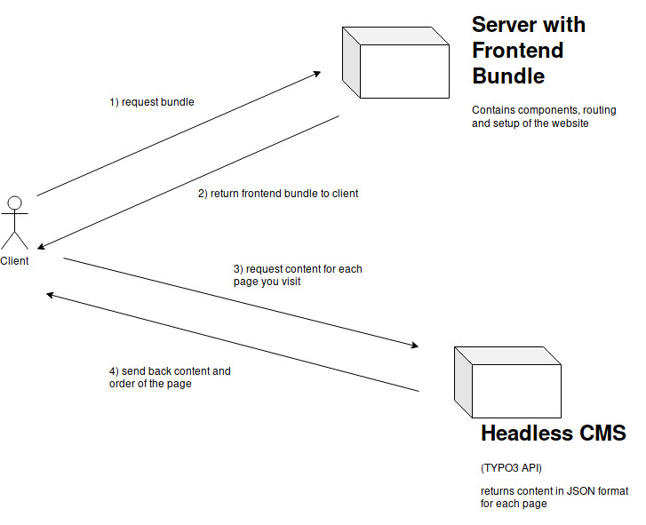
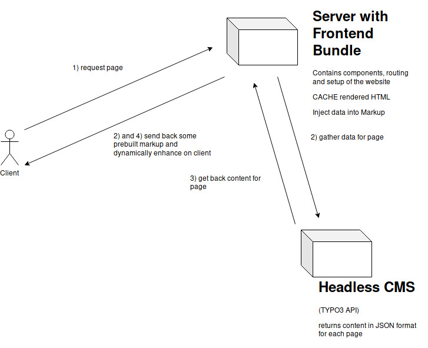
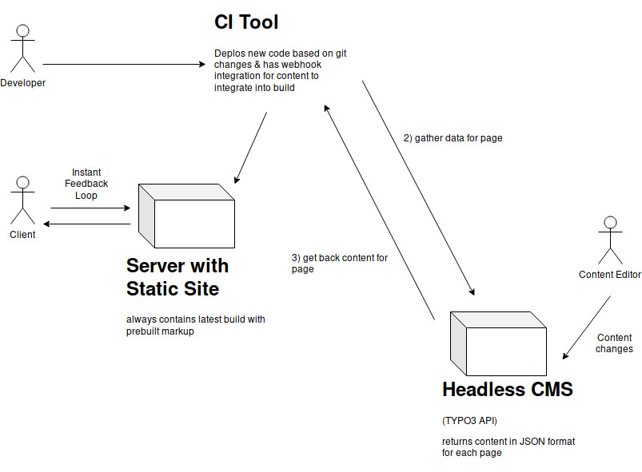

# 👋 Hi, I'm Sibylle Frontend Dev at agentur brandung. Twitter: [@s_ibylle](https://twitter.com/s_ibylle)
# GOING HEADLESS WITHOUT LOSING YOUR HEAD
## Disclaimer - This is not a "pure" JAM Stack talk - We're still figuring things out and adopting first principles
## Agency Life - Lots of clients from different backgrounds (hospitals, football clubs, fitness etc) - Multiple projects on the go at the same time - Usually working with one or two favoured systems (CMS, E-commerce space)
## Favouring one backend tool - All system architecture implemented in said system - System dictates structure (even for the frontend)
## Why is this problematic? - Frontend doesn't own the markup - Separation of concerns not given - Limitations in trying new tools - Duplication of effort
## Building bridges 🛠 - Use expertise in-house but push things further - Find solutions that work for everyone - Accept that you make mistakes along the way
## What can we as Frontend Developers do? ⚛️
## Trialling different technologies - Evaluate new technologies - Don't be afraid to think outside-the-box - Go for tried and tested solutions - Work within the constraints we're given
## What do our customers need? - Fully fledged CMS? - A way to edit and update content? - Plenty of user interaction?
## Conceptual phase ✍️️ - Let customers' needs drive decisions - Evaluate constraints - Decide on technologies based on fit and expertise
## What is our in-house expertise? 🤝 - Frontend has experience in *modern* Javascript and frameworks - Especially React - Backend consists of TYPO3 (CMS) and Shopware Developers
## How could React and TYPO3 work together? 🤝 - Rendering of content based on JSON Endpoints - No more handlebar templates and Fluid templates <!-- - React is using module-JSON und renders the chosen component -->
## Leverage the good parts - Continue to use the tool that the customers are used to - Use frameworks and tools to improve DX and UX - Create your own modules that are reusable anywhere
## Solution 💡 - Headless TYPO3 + React
# Headless TYPO3 + React
## Definition 📣 - Customer can still freely choose from wide range of modules - TYPO3 only acting as data supply for the frontend - Frontend Layer is independent of underlying system - Frontend calls REST / JSON Endpoints for the data, supplied by the CMS
First iteration

Second iteration

## Hosting and Deployment (in our case) ⛴ - Frontend has own server or docroot on multiserver with Node.js installation - Frontend and backend can be deployed independently
## Modular and component based frontend 💭 - CMS returns info on the module(s) to be displayed - Frontend uses this information to map components to the data - Frontend handles context, state and routing
## Advantages ✅ - Separation of backend and frontend (data & view) - Clear division of responsibility - Faster workflow for the frontend & room to grow
## Disadvantages ❌ - Customers might not be able to use "core" features of their CMS - TYPO3 doesn't implement a REST API out-of-the-box - Potentially higher initial setup costs
## Where to go next - Try out static site generators - Spend time and resources to create great APIs - Offer a greater variety of products to customers - Trial serverless approaches - BaaS - FaaS
The future?

## Learning from mistakes 📖 - Customer has to know about advantages and disadvantages - Availablitity of features - Explain workflow and speed of working - Communicate benefits - Be brave and try out new ideas
# Thank you for listening!
# Questions ?
## 📚 / 💻 / 📖 - React: https://reactjs.org/docs/getting-started.html - Next.js: https://github.com/zeit/next.js/ - Learn React in 2019: https://www.robinwieruch.de/learn-react-js/ - SSR vs CSR: https://medium.com/walmartlabs/the-benefits-of-server-side-rendering-over-client-side-rendering-5d07ff2cefe8